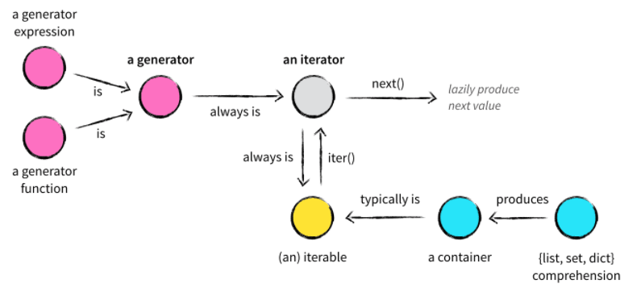

5. 迭代器和生成器
{kind=link}
5.1. 迭代器（iterator）
- 特点：
迭代器是访问集合元素的一种方式，不能随机访问集合中的某个值，只能从头到尾依次访问（
next()方法），访问到一半时不能往回退。不需要事先准备好整个迭代过程中的所有元素。迭代器仅仅在迭代到某个元素时才计算该元素，而在这之前或之后，元素可以不存在或者被销毁。
便于循环比较大的数据集合，节省内存。
不能复制一个迭代器，如果要再次（或者同时）迭代同一个对象，只能去创建另一个迭代器对象。
1## enumerate 返回迭代器 2a = enumerate(['a','b']) 3 4for i in range(2): ## 迭代两次enumerate对象 5 for x, y in a: 6 print x, y 7 print "========"
结果是：
(0, 'a') (1, 'b') ======== ========
可以发现：第二次返回值为空。
5.1.1. 可迭代对象（iterable）
可以直接作用于 for 循环的对象统称为可迭代对象（Iterable） 。只要定义了可以返回一个迭代器的 __iter__() 方法，或者定义了可以支持下标索引的 __getitem__() 方法，那么它就是一个可迭代对象。
1class Iterator_test(object):
2 def __init__(self, data):
3 self.data = data
4 self.index = len(data)
5
6 def __iter__(self):
7 return self
8
9 def next(self):
10 if self.index <= 0:
11 raise StopIteration
12 self.index -= 1
13 return self.data[self.index]
14
15iterator_winter = Iterator_test('abcde')
16for item in iterator_winter:
17 print item
18## 打印 e d c b a
19
20class Iterator_test2(object):
21 def __init__(self, data):
22 self.data = data
23 def __getitem__(self, it):
24 return self.data[it]
25no_iter = Iterator_test2('abcde')
26for item in no_iter:
27 print item
28## 打印 a b c d e
常见的可迭代对象：
集合数据类型，如 list、tuple、dict、set、str 等。
generator，包括生成器和带 yield 的 generator function。
可以被 next() 函数调用并不断返回下一个值的对象称为迭代器（Iterator） 。生成器都是 Iterator 对象，但 list、dict、str 虽然是 Iterable，却不是 Iterator。
所有的 Iterable 均可以通过内置函数 iter() 来转变为 Iterator 。
判断一个对象是否是可迭代对象：
1from collections import Iterable
2a = [1,2,3]
3isinstance(a, Iterable) # True
4
5a = iter(a)
6next(a) # 或 a.next()，返回 1
7next(a) # 返回 2
8next(a) # 返回 3
9next(a) # 抛出 StopIteration 异常
一个可迭代对象是不能独立进行迭代的，Python中， 迭代是通过 for ... in 来完成的 。
for循环会不断调用迭代器对象的 __next__() 方法（python3 __next__() ；python2 next() ），每次循环，都返回迭代器对象的下一个值，直到遇到 StopIteration 异常。
任何实现了 __iter__() 和 __next__() （python2中实现 next() ）方法的对象都是迭代器， __iter__() 返回迭代器自身， __next__() 返回容器中的下一个值 。
5.2. 生成器（generator）
生成器其实是一种特殊的迭代器。它不需要再像上面的类一样写 __iter__() 和 __next__() 方法了，只需要一个 yield 关键字。 yield 就是 return 返回的一个值，并且记住这个返回的位置。下一次迭代就从这个位置开始。
生成器一定是迭代器（反之不成立），因此任何生成器也是以一种懒加载的模式生成值。
1def generator_winter():
2 i = 1
3 while i <= 3:
4 yield i
5 i += 1
6
7generator_iter = generator_winter() ## 函数体中的代码并不会执行，只有显示或隐示地调用next的时候才会真正执行里面的代码。
8print generator_iter.next() ## 1
9print generator_iter.next() ## 2
10print generator_iter.next() ## 3
11print generator_iter.next() ## 抛出 StopIteration 异常
生成器表达式 类似于列表推导式，只是把 [] 换成 ()。
1gen = (x for x in range(10)) ## <generator object <genexpr> at 0x0000000012BC4990>
2for item in gen:
3 print item
4
5## fibonacci 数列
6def fibonacci(n):
7 a, b = 0, 1
8 while b <= n:
9 yield b
10 a, b = b, a+b
11f = fibonacci(10)
12for item in f:
13 print item
5.2.1. send
send 方法可带一个参数，参数可以是 None。None参数的 send 方法和 next/__next__ 的功能完全相同：将暂停在 yield 语句出的程序继续执行；非 None 参数的 send 方法会将参数值作为 yield 语句返回值赋值给接收者。
注意：非 None 参数的 send 方法无法启动执行生成器函数。也就是说，程序中第一次使用生成器调用 send 方法时，参数只能是 None（推荐直接使用 next/__next__）。
5.2.2. close
当程序在生成器函数中遇到 yield 语句暂停运行时，调用 close 方法会阻止生成器函数继续执行，该函数会在程序停止运行的位置抛出 GeneratorExit 异常。
虽然通过捕获 GeneratorExit 异常，可以继续执行生成器函数中剩余的代码，但这部分代码中不能再包含 yield 语句，否则程序会抛出 RuntimeError 异常。
生成器函数一旦调用 close，后续将无法再通过 next/__next__ 启动生成器，否则会抛出 StopIteration 异常。
5.2.3. throw
在生成器函数执行暂停处，throw 方法抛出一个指定的异常，之后程序会继续执行生成器函数中后续的代码，直到遇到下一个 yield 语句。需要注意的是，如果到剩余代码执行完毕没有遇到下一个 yield 语句，则程序会抛出 StopIteration 异常。
5.2.4. 生产者-消费者模型
生成器中的 yield 可以一定程度上实现协程。
生产者生产消息后，直接通过 yield 跳转到消费者开始执行；待消费者执行完毕后，切换回生产者继续生产，效率极高。
1import time
2
3def consumer():
4 r = ''
5 while True:
6 n = yield r
7 if not n:
8 return
9 print('[CONSUMER] Consuming %s...' % n)
10 time.sleep(1)
11 r = '200 OK'
12
13def produce(c):
14 c.__next__()
15 n = 0
16 while n < 3:
17 n = n + 1
18 print('[PRODUCER] Producing %s...' % n)
19 r = c.send(n)
20 print('[PRODUCER] Consumer return: %s' % r)
21 c.close()
22
23if __name__=='__main__':
24 c = consumer()
25 produce(c)
输出:
[PRODUCER] Producing 1...
[CONSUMER] Consuming 1...
[PRODUCER] Consumer return: 200 OK
[PRODUCER] Producing 2...
[CONSUMER] Consuming 2...
[PRODUCER] Consumer return: 200 OK
[PRODUCER] Producing 3...
[CONSUMER] Consuming 3...
[PRODUCER] Consumer return: 200 OK
5.3. 参考资料
Python迭代器，生成器–精华中的精华
python 生成器和迭代器有这篇就够了
Python生成器（send，close，throw）方法详解